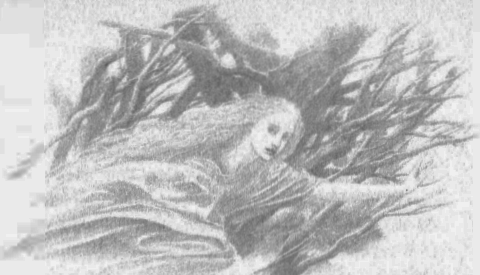

15
Niënor’a gelince, arkadan gelen kovalamaca seslerini duydu ve koşarak ormana daldı; ve giysilerini yırttı, kaçarken teker teker attı, ta ki çıplak kalana dek; ve bütün gün, yürek patlamacasına, avlanan bir hayvan gibi koşmaya devam etti ve durup nefes almaya cesaret edemedi. Ama akşamleyin aniden deliliği geçti. Bir an hayretle kıpırtısız kaldı ve sonra, mutlak bitkinlikten bayılarak, vurulmuş gibi, derin bir eğreltiotu kümesinin içine düştü. Ve her şeyden bihaber şekilde eski dalların ve baharın yeni sürgünlerinin arasında uyudu.
Sabah uyandı ve hayata ilk kez çağrılmış biri gibi ışığa sevindi; ve gördüğü her şey ona yeni ve yabancı geldi ve isimlerini bilemedi. Çünkü geride yalnızca, bildiği hiçbir şeyin anısını, hiçbir sözcüğün yankısını getirmeyen, boş bir karanlık vardı. Yalnızca bir korku gölgesi hatırlıyordu ve bu yüzden çekingendi ve hep saklanacak yer arıyordu: ağaçlara tırmanıyor, çalıların içine giriyordu ve bir ses ya da gölge onu korkutursa, bir sincap ya da tilki kadar hızlı hareket ediyordu; ve oradan, yaprakların arasından uzun uzun, utangaç gözlerle dışarıyı izliyor, sonra yine yoluna devam ediyordu.
Böylece, ilk kaçtığı zamanki gibi giderek Teiglin Irmağı’na geldi ve susuzluğunu giderdi; ama yiyecek bulamadı, aramayı bilmiyordu da; ve acıkmış, üşümüştü. Ve suyun üzerindeki ağaçlar daha sık ve karanlık göründüklerinden (Brethil Ormanı’nın saçakları olduklarından gerçekten de öyleydiler) sonunda karşıya geçti ve yeşil bir tepecik bulup, kendini yere bıraktı: çünkü bitkin düşmüştü ve geride bıraktığı karanlık ona yeniden yetişiyor, güneş kararıyor gibi geliyordu ona.
Gerçekten de, güneyden şimşek ve sağanak yüklü, kara bir fırtına yaklaşıyordu; Niënor gökgürültüsünden korkarak yattı orada ve karanlık yağmur çıplaklığını dövdü ve o, kapana kısılmış vahşi bir yaratık gibi, tek kelime etmeden izledi.
Tesadüf eseri, Brethil’in ormancılarından bazıları o saatte orklarla savaşmaktan dönüyor, yakındaki bir sığınağa ulaşmak için Teiglin Geçitlerinde seğirtiyordu; ve öyle büyük bir şimşek çaktı ki, Haudh-en-Elleth beyaz bir alevle aydınlandı. Bunun üzerine, adamların başını çeken Turambar irkildi, gözlerini örttü ve titremeye başladı; çünkü Finduilas’ın mezarının üzerinde ölü bir genç kızın hayaletini gördüğünü sanmıştı.
Ama adamlardan biri tepeciğe koştu ve ona seslendi: “Buraya, beyim! Burada genç bir kadın yatıyor, hem de canlı!” Turambar gelip onu kaldırdı ve kızın sırılsıklam saçlarından su damlıyordu, ama gözlerini kapatmış, titriyor, artık çabalamıyordu. Bunun üzerine, kızın bu şekilde çırılçıplak yatmasına şaşan Turambar onu kendi pelerinine sardı ve ormandaki avcı kulübesine kadar taşıdı. Orada bir ateş yaktılar ve kızı örtülere sardılar ve kız gözlerini açıp çevresine bakındı; ve gözleri Turambar’a takıldığında yüzü aydınlandı ve elini ona doğru uzattı, çünkü sonunda, karanlıkta aradığı bir şeyi bulmuş gibi gelmişti ve rahatlamıştı. Ama Turambar onun elini tuttu, gülümsedi ve şöyle dedi: “Şimdi, hanımefendi, bize adını ve aileni, ve başına ne kötülük geldiğini söylemez misin?”
Bunun üzerine kız başını iki yana salladı ve sessiz kaldı, ama ağlamaya başladı; ve ona verebildikleri yiyecekleri açlıkla yiyene kadar onu bir daha rahatsız etmediler. Ve kız yemeğini bitirdiği zaman içini çekti ve elini Turambar’ın elinin üzerine koydu; ve Turambar şöyle dedi: “Yanımızda güvendesin. Bu gece burada dinlenebilirsin ve sabahleyin seni ormanın yükseklerindeki evlerimize götürürüz. Ama ismini ve aileni bilmek isteriz, çünkü belki onları bulabiliriz ve onlara senden haber ulaştırabiliriz. Bize söylemez misin?” Ama yine kız yanıt vermedi ve ağladı.
“Endişelenme!” dedi Turambar. “Belki de hikayen henüz anlatılamayacak kadar hüzünlüdür. Ama ben sana bir isim vereceğim ve sana Níniel, yani Gözyaşlarının Kızı, diyeceğim.” Ve bu ismi duyunca kız başını kaldırıp baktı ve başını iki yana salladı, ama, “Níniel,” dedi. Ve yaşadığı karanlıktan sonra söylediği ilk sözcük buydu ve o andan itibaren ormancıların arasında ismi bu oldu.
Sabahleyin Níniel’i Ephel Brandir’e götürmek üzere yola çıktılar ve yol dik bir şekilde, yükseklerden yuvarlanarak akan Celebros deresine doğru tırmanıyordu. Oraya ahşap bir köprü inşa edilmişti ve dere, köprünün altındaki aşınmış kayalık çıkıntıdan dökülüyor, köpük köpük basamaklar halinde çok aşağıdaki kayalık çanağa düşüyordu; ve hava yağmur gibi bir serpinti ile doluydu. Çağlayanın başında geniş bir çimenlik vardı ve çevresinde huş ağaçları yetişiyordu, ama köprünün üzerinde, iki mil kadar batıdaki Teiglin Vadileri’ni gören geniş bir manzara vardı. Orada hava her zaman serin olurdu ve yazın yolcular orada dinlenir, soğuk sudan içerdi. Bu çağlayana Dimrost, yani Yağmurlu Merdiven denirdi, ama o günden sonra adı Nen Girith, yani Ürperten Su oldu; çünkü Turambar ve adamları orada durdu, ama Níniel o yere gelir gelmez üşüdü ve ürperdi, ve onu ne ısıtabildiler, ne de teselli edebildiler. Bu yüzden hemen yollarına devam ettiler; ama daha Ephel Brandir’e gelmeden, Níniel ateşler içinde, kendini bilmeden yürümeye başladı.
Níniel uzun süre hasta yattı ve Brandir ona şifa vermek için tüm yeteneğini kullandı ve ormancıların karıları gece gündüz başında beklediler. Ama ancak Turambar onun yanında kaldığında huzur bulabiliyor, inlemeden uyuyabiliyordu; ve onu izleyen herkes şunu fark etti: ateşi yükseldiğinde, genellikle çok huzursuz olsa da, ne elf ne de insan dilinde tek kelime etmiyordu. Ve yavaş yavaş sağlığına kavuşup, uyandığında, yeniden yemek yemeye başladığında, Brethil kadınları bir çocuğa konuşmayı öğretir gibi, sözcük sözcük öğrettiler ona. Ama Níniel hızlı öğreniyordu ve kaybettiği irili ufaklı hâzineleri bulan biri gibi, bundan büyük zevk alıyordu; ve sonunda, arkadaşları ile konuşabilecek kadar öğrendiğinde, şöyle demeye başladı: “Bu şeyin adı nedir? Çünkü yaşadığım karanlıkta onu kaybettim.” Ve bir kez daha gezinmeye başladığında, Brandir’in evini aradı; çünkü bütün canlı varlıkların isimlerini öğrenmeye can atıyordu ve Brandir bu konularda çok bilgiliydi; ve bahçelerde, ormandaki açıklıklarda birlikte yürüyorlardı.
Zamanla Brandir Níniel’i sevmeye başladı; ve Níniel güçlendiğinde, sakatlığı yüzünden Brandir’in onun koluna yaslanmasına izin verdi ve ona ağabey dedi. Ama kalbini Turambar’a vermişti ve ancak o geldiğinde gülümsüyor, ancak o neşeyle konuştuğunda kahkaha atıyordu.
Altın bir sonbahar akşamında birlikte oturuyorlardı ve güneş yamacı ve Ephel Brandir’in evlerini ışıl ışıl aydınlatmıştı ve derin bir sessizlik vardı. Sonra Níniel ona şöyle dedi: “Şu ana kadar, senden başka her şeyin ismini sordum. Sana ne diyorlar?”
“Turambar,” diye yanıt verdi Turambar.
Sonra, Níniel bir yankıyı dinlermiş gibi duraksadı; ama şöyle dedi: “Peki, anlamı ne, yoksa yalnızca senin ismin mi?”
“Anlamı,” dedi Turambar, “Kara Gölge’nin Efendisi. Çünkü ben de bir karanlık yaşadım, Níniel, içinde değerli şeyleri kaybettiğim bir karanlık; ama artık onu yendiğimi düşünüyorum.”
“Sen de ondan koşa koşa kaçıp, bu güzel ormana mı geldin?” dedi. “Ne zaman kaçtın, Turambar?”
“Evet,” diye yanıt verdi Turambar. “Seneler boyunca kaçtım. Ve sen kaçarken kaçtım. Çünkü sen geldiğinde karanlıktı, Níniel, ama o zamandan beri aydınlık. Ve bana öyle geliyor ki, uzun zamandır boşuna aradığım, bana geldi.” Ve alacakaranlıkta evine dönerken, kendi kendine şöyle dedi: “Haudh-en-Elleth! Yeşil tümsekten geldi. Bu bir işaret mi, onu nasıl okumalıyım?”
O altın sene gelip geçtikten sonra, yumuşak bir kış çöktü ve sonra yeni bir parlak sene geldi. Brethil’de huzur vardı ve ormancılar sessiz kaldılar ve dışarıya çıkmadılar; bu yüzden çevrede uzanan topraklardan haber almadılar. Çünkü o zamanlarda, Glaurung’un karanlık hükümranlığı altında güneye gelen ya da Doriath sınırlarını gözetlemeye gönderilen orklar, Teiglin Geçitlerinden kaçınıyorlardı ve batıya, ırmağın çok ötesine geçiyorlardı.
Ve artık Níniel tamamen iyileşmiş, güçlenmiş ve güzelleşmişti; ve Turambar artık kendini tutmaktan vazgeçti ve ona evlenme teklif etti. Níniel sevindi; ama Brandir haberi aldığında yüreği burkuldu ve ona şöyle dedi: “Acele etme! Beklemeni öğütlersem, kötü düşünme benim için.”
“Sen hiçbir şeyi kötülükle yapmazsın,” dedi Níniel. “Ama neden bana böyle bir öğüt veriyorsun, bilge ağabeyim?”
“Bilge ağabey mi?” diye yanıt verdi Brandir. “Sakat ağabey demek daha doğru olur, sevilmeyen, sevilesi olmayan. Nedenini ben de bilmiyorum. Ama bu adamın üzerinde bir gölge var ve ben korkuyorum.”
“Bir gölge varmış,” dedi Níniel, “bana öyle anlattı. Ama benim gibi kaçmış ondan. Hem, o sevilmeye layık değil mi? Şimdi barış içinde yaşıyor olsa da, bir zamanlar, onu gören tüm düşmanlarımızın kaçtığı, en kudretli kumandan değil miydi?”
“Bunu sana kim söyledi?” dedi Brandir.
“Dorlas,” dedi Níniel. “Doğruyu söylememiş mi?”
“Gerçekten de doğru,” dedi Brandir, ama memnun olmamıştı, çünkü Dorlas, orklara karşı savaşmayı savunanların başında geliyordu. Ama Níniel’i oyalamak için başka sebepler aradı; ve bu yüzden şöyle dedi: “Gerçek, ama gerçeğin tamamı değil; çünkü o Nargothrond’un Kumandanı idi ve kuzeyden geldi; ve savaşçı Hador Evi’nden, Dor-lóminli Húrin’in oğlu olduğu söyleniyor.” Ve bu ismi duyunca Níniel’in yüzünden geçen gölgeyi gören Brandir, düşüncelerini yanlış anladı ve konuşmaya devam etti: “Gerçekten de, Níniel, böyle birinin yakın zamanda savaşa döneceğini, belki bu topraklardan çok uzağa gideceğini düşünmen doğru olur. Hem, böyle olursa, buna ne kadar dayanabilirsin? Dikkatli ol, çünkü Turambar bir daha savaşa giderse, üstünlüğün onda değil Gölge’de olacağı doğuyor içime.”
“Dayanamazdım,” diye yanıt verdi Níniel; “ama evlenmeden dayanmak, evlendikten sonra dayanmaktan daha kolay olmazdı. Hem, bir karısının olması belki onu engeller, gölgeyi uzak tutar.” Yine de, Brandir’in sözleri onu huzursuz etmişti ve Turambar’dan bir şüre daha beklemesini istedi. Turambar meraklandı, morali bozuldu; ama Níniel’den, beklemesini öğütleyenin Brandir olduğunu öğrendiğinde kızdı.
Ama ertesi bahar geldiğinde, Níniel’e şöyle dedi: “Zaman geçiyor. Bekledik ve daha fazla beklemeyeceğim. Yüreğin sana ne söylüyorsa onu yap, çok sevgili Níniel, ama bak: önümdeki seçenekler şunlar. Ya şimdi yabanda savaşmaya gideceğim; ya da seninle evleneceğim ve bir daha asla savaşa gitmeyeceğim —yuvamıza şer saldırırsa, seni korumak amacı dışında.”
Níniel buna gerçekten memnun oldu ve evlenmeyi kabul etti ve yaz ortasında evlendiler; ormancılar büyük bir ziyafet hazırladı ve onlara, onlar için Amon Obel’in üzerinde inşa ettikleri güzel bir ev armağan ettiler. Orada mutluluk içinde yaşamaya başladılar, ama Brandir huzursuzdu ve yüreğindeki gölge gittikçe büyüyordu.